02.4 일차방정식과 연립방정식
이 장에서는 미지수 x, y를 포함한 일차방정식과 연립방정식의 개념 및 풀이법을 복습하고, 격자 세상 속 여러 상태들의 가치 함수가 서로 얽혀 있을 때 이를 방정식 연립을 통해 구해내는 실전 원리를 배웁니다.
02.4.1 얽히고설킨 단서들을 풀어내는 방정식의 열쇠
강화학습에서 상태 가치들은 독립적으로 외따로 떨어져 있지 않습니다.
“내가 있는 방의 가치는 이웃한 다음 방들의 가치와 보상의 가중합”이라는 긴밀하게 맞물린 관계를 형성합니다. 이 얽힌 실타래를 풀어 참값을 얻기 위해서는 연립방정식이라는 마법의 열쇠가 필요합니다.
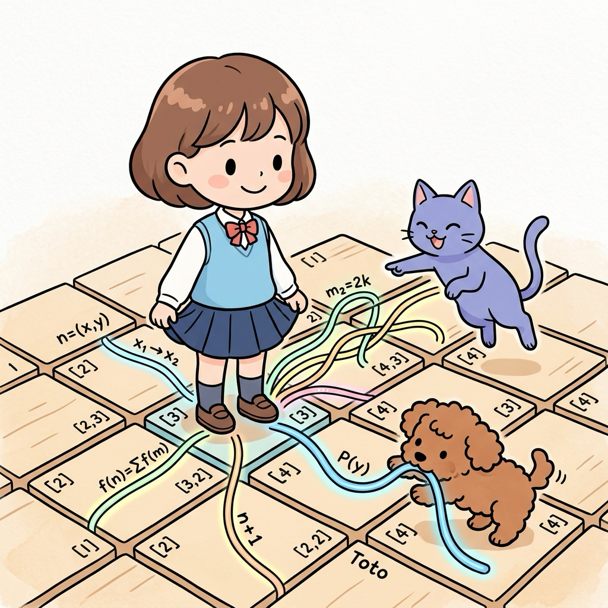
그림 02-4-1 격자 세상의 방(상태)들이 실타래처럼 얽혀 서로의 가치에 영향을 주는 관계를 살펴보는 도로시와 지니, 토토“지니! 격자판에서 가치를 계산하려고 하는데, A 방의 가치는 B 방의 가치에 영향을 받고, B 방의 가치는 다시 A 방의 가치에 영향을 줘서 다람쥐 쳇바퀴 돌듯 수식이 계속 꼬리를 물고 이어져. 이 꼬인 실타래를 어떻게 한꺼번에 풀 수 있을까?”
도로시가 연필을 쥐고 칠판의 순환 수식들을 가리키며 땀을 뻘뻘 흘렸습니다.
발밑에 있던 토토도 걱정스러운 표정으로 고개를 갸웃거렸습니다.
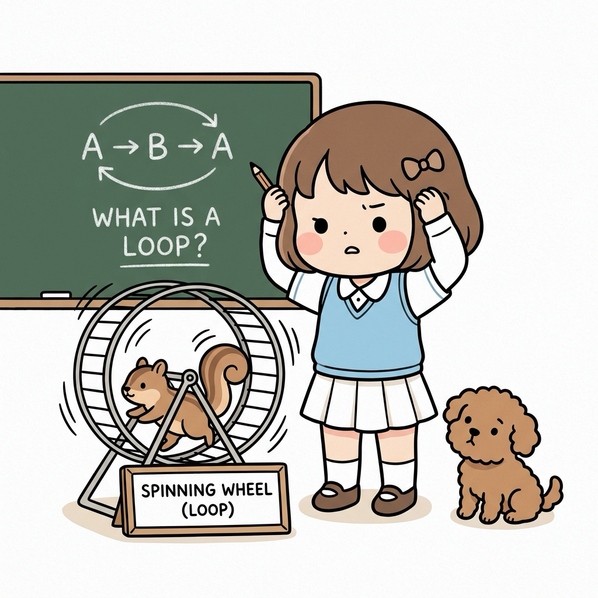
그림 02-4-2 A 방과 B 방의 가치가 서로 맞물려 쳇바퀴처럼 순환하는 구조를 고민하는 도로시와 토토지니가 보랏빛 마법 연기를 흩날리며 허공에 양팔 저울 하나를 띄웠습니다.
“도로시, 너무 걱정하지 마! 수학에는 이렇게 서로 얽혀서 꼬리를 무는 관계를 한 번에 말끔하게 정리해주는 도구가 있단다. 바로 일차방정식과 연립방정식이지. 저울의 균형을 맞추는 원리만 이해하면 아주 쉽게 풀 수 있어!”
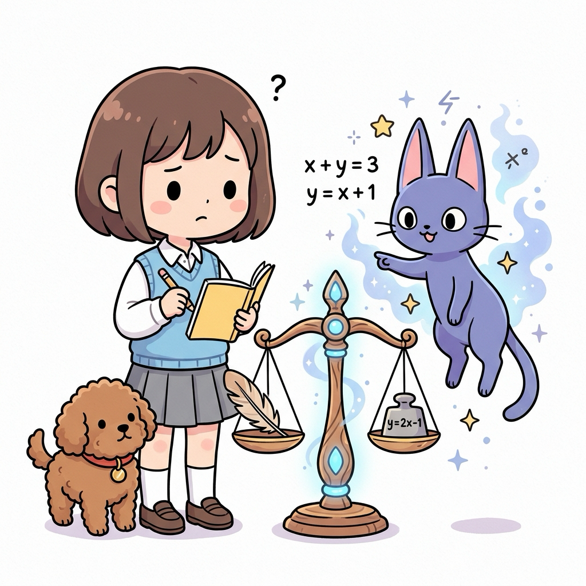
그림 02-4-3 서로 맞물려서 꼬리를 무는 가치 관계 수식을 보며 어떻게 계산해야 할지 고민에 빠진 도로시와 토토에게 양팔 저울을 띄워 설명하는 지니02.4.2 일차방정식과 이항의 원리
지니는 칠판에 하나의 미지수를 가진 간단한 식을 적었습니다.
“먼저 가장 기초가 되는 일차방정식부터 시작해 볼까? 방정식은 쉽게 말해 ‘양팔 저울’과 같단다. 왼쪽(좌변)과 오른쪽(우변)의 무게가 완벽하게 수평을 이루고 있는 상태지.”
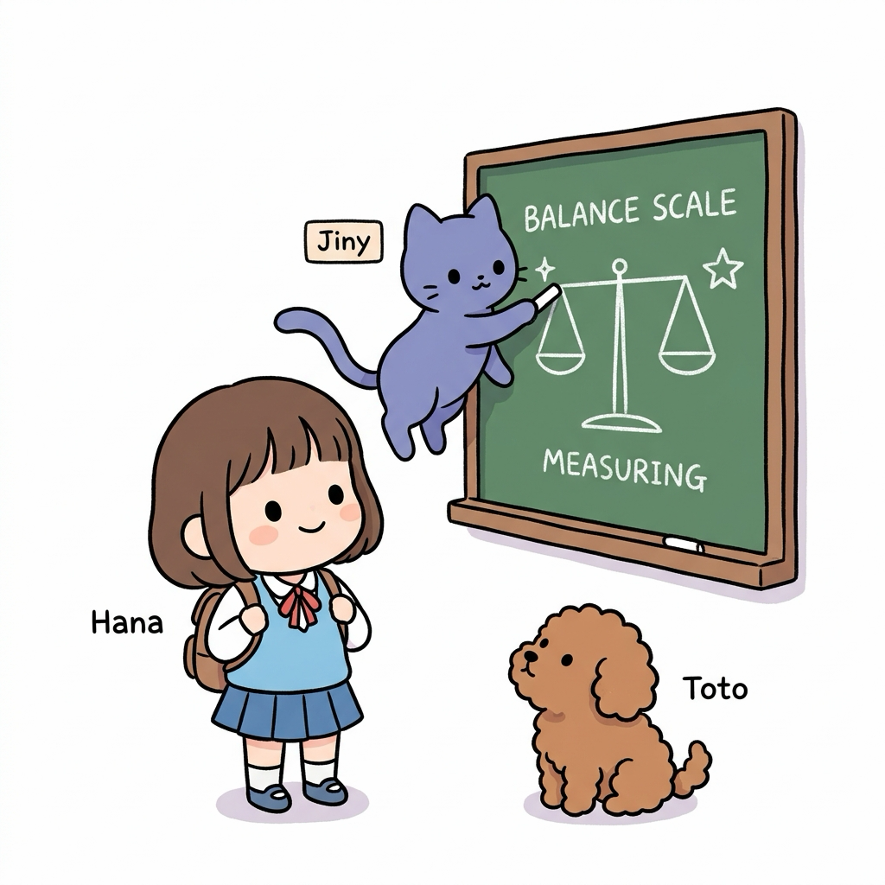
그림 02-4-4 지니가 칠판에 그린 양팔 저울 그림을 보며 방정식의 균형을 공부하는 도로시와 토토2.4.2.1 등식의 성질
등식은 다음과 같은 양팔 저울의 법칙을 따릅니다:
- 양변에 같은 수를 더해도 저울은 균형을 유지합니다.
- 양변에서 같은 수를 빼도 저울은 균형을 유지합니다.
- 양변에 같은 수를 곱하거나 나눠도(0이 아닌 수로) 저울은 균형을 유지합니다.
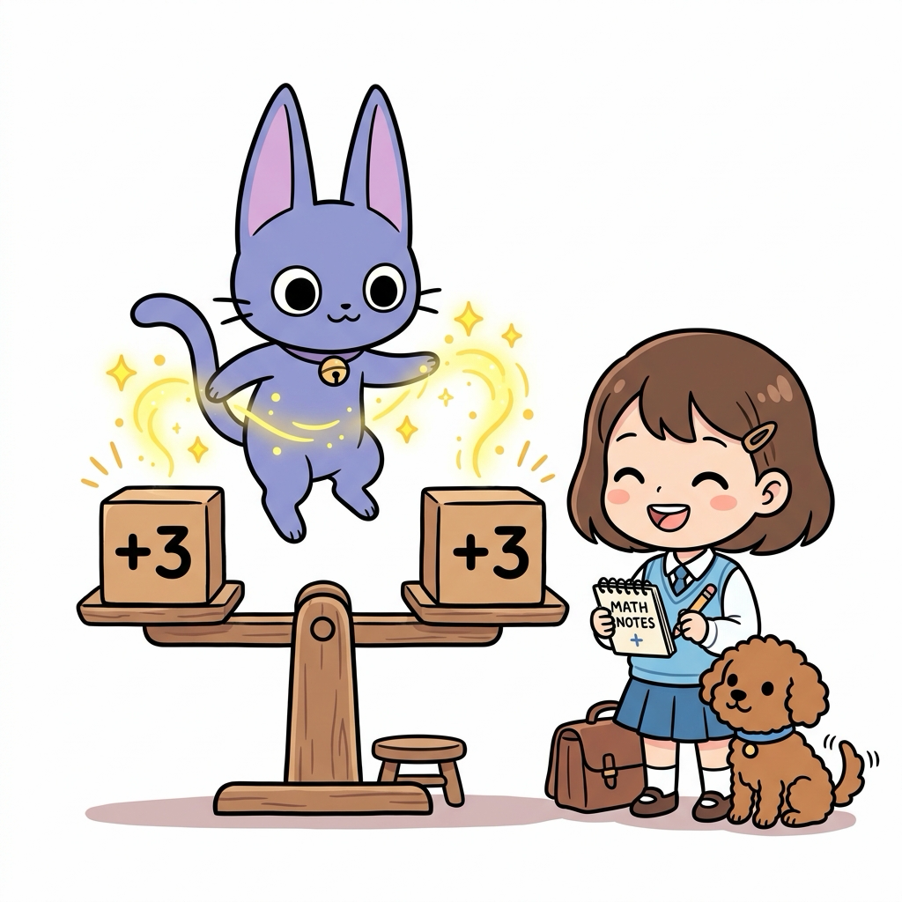
그림 02-4-5 등식의 양변에 같은 연산을 취해도 저울의 평형이 유지되는 등식의 성질(Properties of Equality)을 마법 저울로 확인하는 지니와 도로시, 토토2.4.2.2 이항(Transposition)이란?
“이 성질을 이용하면, 등식의 한쪽에 있는 숫자를 반대쪽으로 옮길 수 있는데, 이를 이항이라고 해. 이때 저울의 균형을 맞추기 위해 부호가 반대로 바뀐단다.”
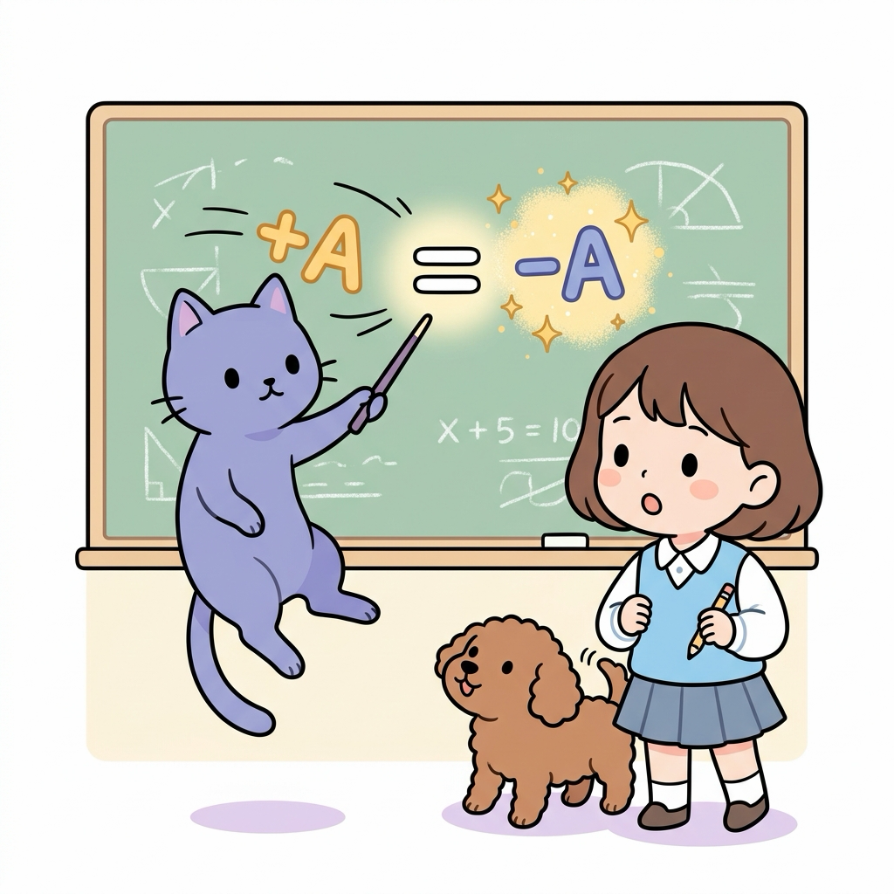
그림 02-4-6 등식의 등호(=)를 넘어가면서 항의 부호가 마이너스로 바뀌는 이항의 마법 같은 원리에 호기심을 가지는 도로시와 토토지니가 손가락을 튕기자 칠판 위에 수식이 둥둥 떠올랐습니다.
- V = 2 + 0.9 × V
“자, 이 식에서 미지수 V를 구하고 싶다면, 오른쪽의 V 항을 왼쪽으로 모아야겠지? 0.9 × V를 왼쪽으로 이항해 볼까?”
- ➔ V - 0.9 × V = 2 (더해져 있던 0.9 × V가 이항하면서 빼기
-로 바뀜) - ➔ (1 - 0.9) × V = 2 (분배법칙으로 V를 묶기)
- ➔ 0.1 × V = 2
- ➔ V = 2 ÷ 0.1 = 20
“와! 더해져 있던 게 반대쪽으로 넘어가면 빼기가 되고, 곱해져 있던 0.1은 반대쪽으로 넘어가면 나누기가 되어서 결국 V = 20이라는 참값이 딱 나오는구나!”
도로시가 손뼉을 치며 신나 했습니다.
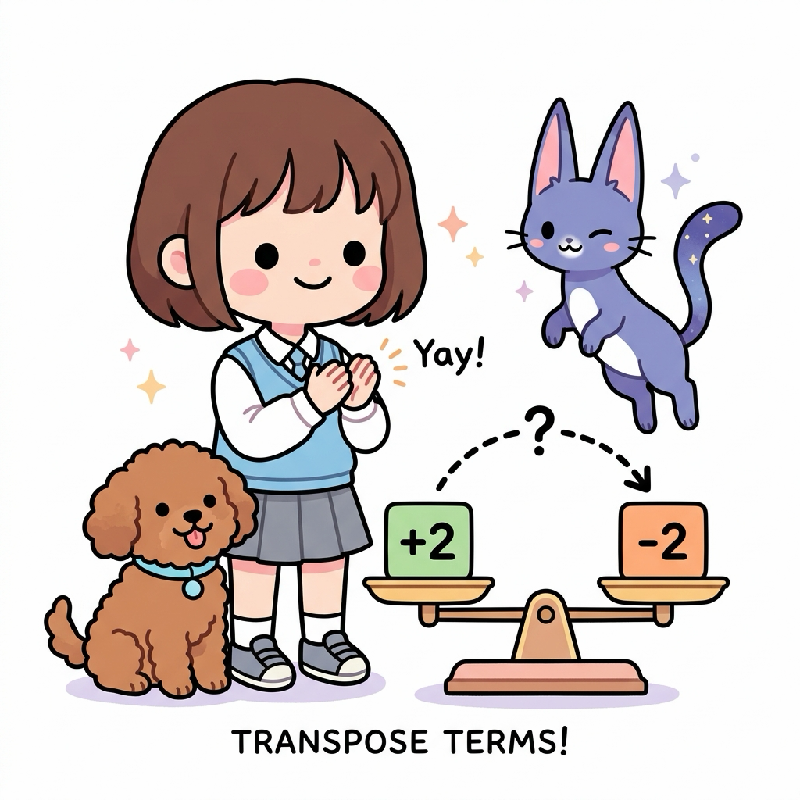
그림 02-4-7 등식의 성질에 따라 한 변의 항을 부호를 바꾸어 반대편으로 옮기는 이항(Transposition)의 원리를 양팔 저울로 시각화하여 관찰하는 지니와 도로시, 토토02.4.3 연립방정식과 그 풀이법
“좋아, 이제 미지수가 여러 개로 늘어나는 연립방정식으로 넘어가 볼까? 연립방정식은 미지수가 2개 이상이고, 이들을 동시에 만족하는 공통의 해를 찾는 것이 목표야.”
지니가 요술봉으로 칠판을 툭툭 치며 설명했습니다.
그림 02-4-8 두 개의 방정식을 하나로 묶어 연립방정식(System of Equations)을 만들고 해를 구하는 개념을 배우는 도로시와 토토
2.4.3.1 연립방정식 (System of Linear Equations)
미지수가 x, y 두 개인 일차방정식 2개를 한 쌍으로 묶은 형태입니다.
이를 풀기 위해선 두 미지수 중 하나를 없애서(소거) 일차방정식 문제로 단순화시켜야 합니다.
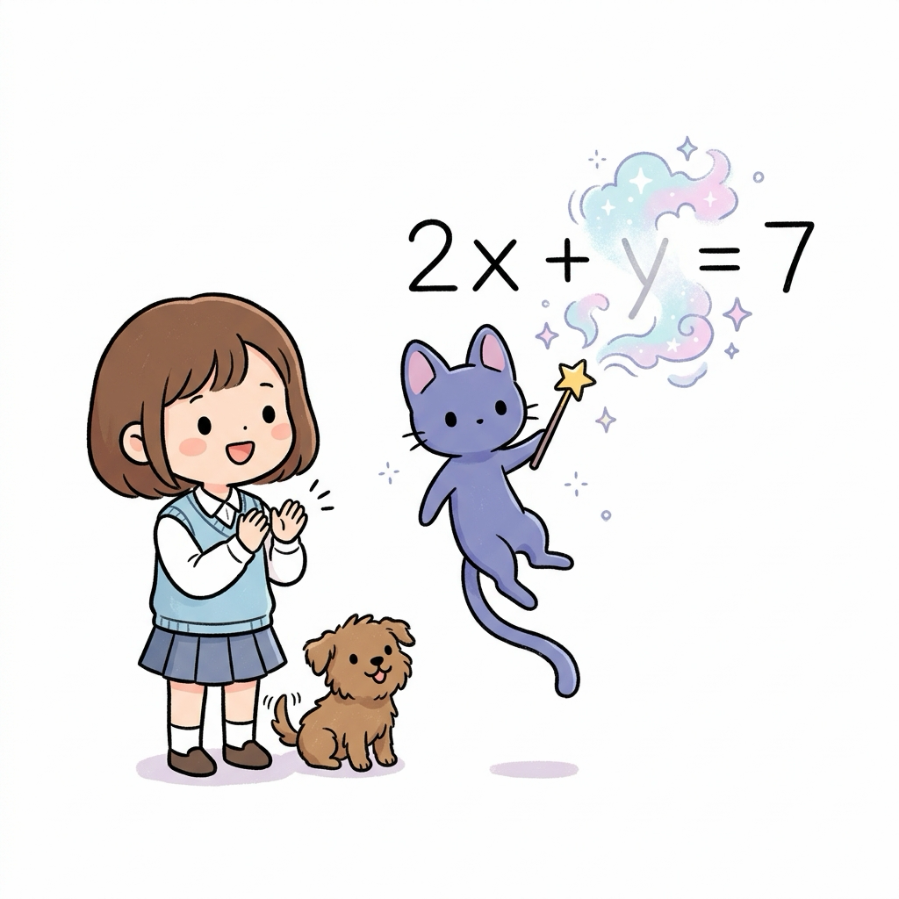
그림 02-4-9 두 개의 미지수 중 하나(y)를 소거(Elimination)하여 간단한 일차방정식으로 바꾸는 과정을 칠판을 보며 정리하는 도로시와 토토여기에는 대표적으로 두 가지 방법이 있습니다.
그림 02-4-10 연립방정식의 해를 구하기 위해 사용할 수 있는 대표적인 두 가지 마법의 해결 방식(가감법과 대입법)의 갈림길을 살펴보는 도로시와 토토
2.4.3.2 가감법 (Elimination Method)
두 식을 서로 더하거나 빼서 미지수 하나를 없애는 방법입니다.
- 예시:
① x + y = 10
② x - y = 2
- 두 식 ①과 ②를 더해봅니다: (x + y) + (x - y) = 10 + 2 ➔ 2 × x = 12 ➔ x = 6
- 구해진 x = 6을 식 ①에 다시 대입합니다: 6 + y = 10 ➔ y = 4
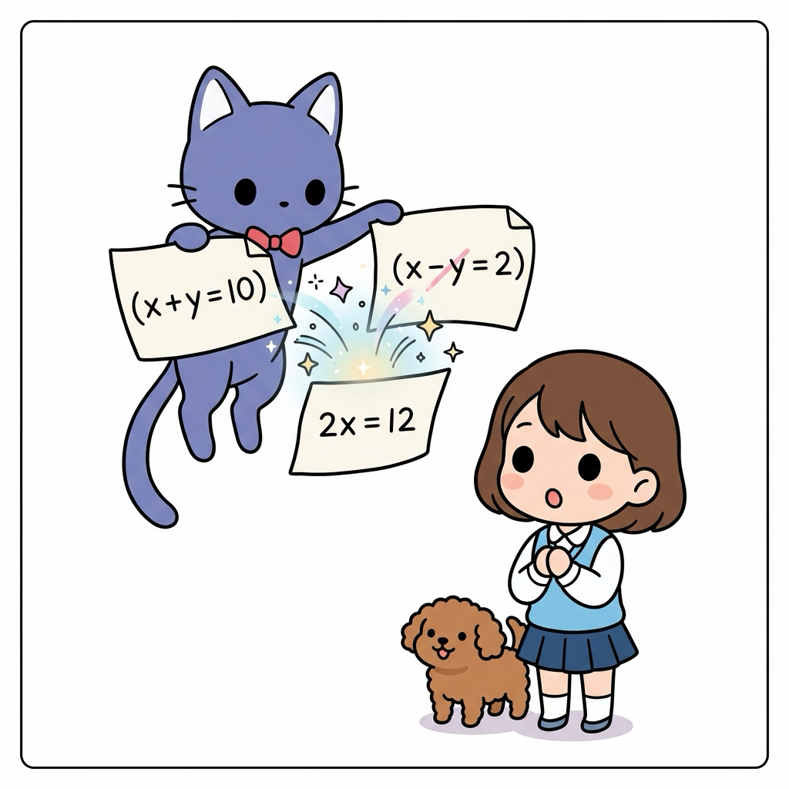
그림 02-4-11 두 식을 서로 더해 y를 소거(Elimination)하는 가감법의 계산 과정을 공부하는 도로시와 토토2.4.3.3 대입법 (Substitution Method)
한 식을 하나의 미지수에 관해 정리한 뒤, 그것을 다른 식에 쏙 집어넣어 미지수를 하나로 줄이는 방법입니다.
- 예시:
식 ②를 x에 대해 정리하면:
x = 2 + y
이를 식 ①의 x 자리에 대입합니다:
(2 + y) + y = 10
➔ 2 + 2 × y = 10
➔ 2 × y = 8 (2를 이항)
➔ y = 4
- y = 4를 x = 2 + y에 대입하면: x = 2 + 4 = 6
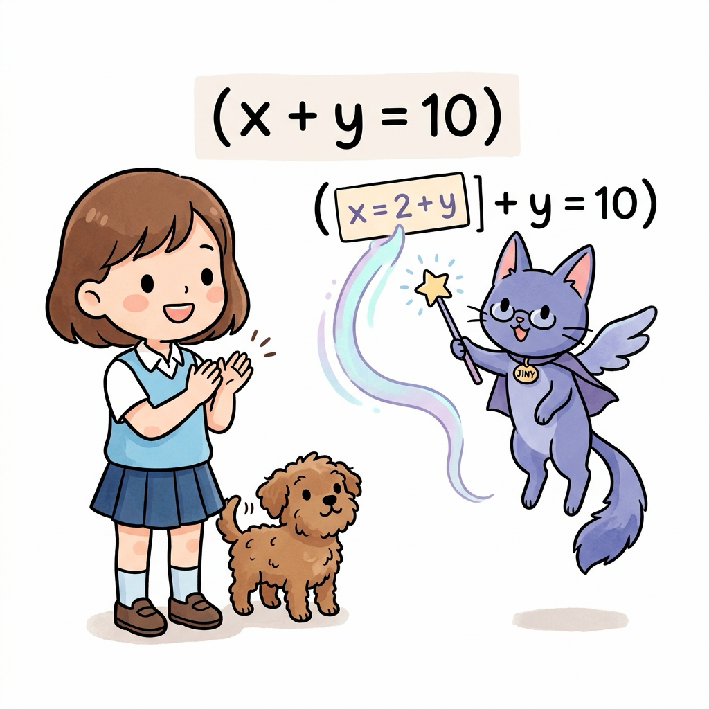
그림 02-4-12 한 미지수 식을 다른 식의 미지수 자리에 쏙 대입(Substitution)하여 해결하는 대입법 계산 과정을 공부하는 도로시와 토토“오! 가감법으로 위아래 식을 더해서 y를 없앨 수도 있고, 대입법으로 x 자리에 식을 통째로 대입해서 풀 수도 있구나! 결과는 둘 다 똑같네!”
토토가 도로시의 다리 사이로 꼬리를 살랑살랑 흔들며 기쁜 듯 멍멍 짖었습니다.
02.4.4 방정식의 종류와 해의 역사
“지니, 연립방정식 말고도 세상에는 다양한 모양의 방정식들이 있어?” 도로시가 턱을 괴며 물었습니다.
그림 02-4-13 세상의 다양한 방정식들에 대해 호기심 어린 눈빛으로 질문하는 도로시와 지니, 토토
“그럼! 미지수 x가 곱해진 횟수, 즉 차수에 따라 일차방정식, 이차방정식, 삼차방정식 등으로 분류할 수 있단다. 그리고 이 방정식을 풀기 위한 인류의 역사 또한 아주 흥미진진하지.”
지니가 허공에 지팡이를 휘두르자, 고대부터 근대까지의 수학 발전사가 파노라마처럼 펼쳐졌습니다.
그림 02-4-14 지니가 허공에 마법 지팡이를 휘두르자 마법처럼 펼쳐지는 흥미진진한 인류의 방정식 연구 역사를 감상하는 도로시와 토토
2.4.4.1 방정식의 차수와 분류
방정식은 가장 높은 차수의 항을 기준으로 부릅니다:
- 일차방정식 (Linear Equation): a × x + b = 0 (단, a ≠ 0)
- 가장 직관적이며 등식의 성질을 이용하여 쉽게 해를 구할 수 있습니다.
- 이차방정식 (Quadratic Equation): a × x2 + b × x + c = 0 (단, a ≠ 0)
- 고대 바빌로니아 시절부터 연구되었으며, 오늘날 우리가 잘 아는 근의 공식을 통해 근의 참값을 언제나 구할 수 있습니다.
- 삼차방정식 (Cubic Equation)과 사차방정식 (Quartic Equation):
- 16세기 이탈리아의 수학자 타르탈리아, 카르다노, 페라리 등에 의해 일반적인 근의 공식이 발견되었습니다. 어떤 삼차, 사차방정식이 주어지더라도 사칙연산과 거듭제곱근만으로 해를 구할 수 있는 마법의 열쇠가 완성된 것이죠.
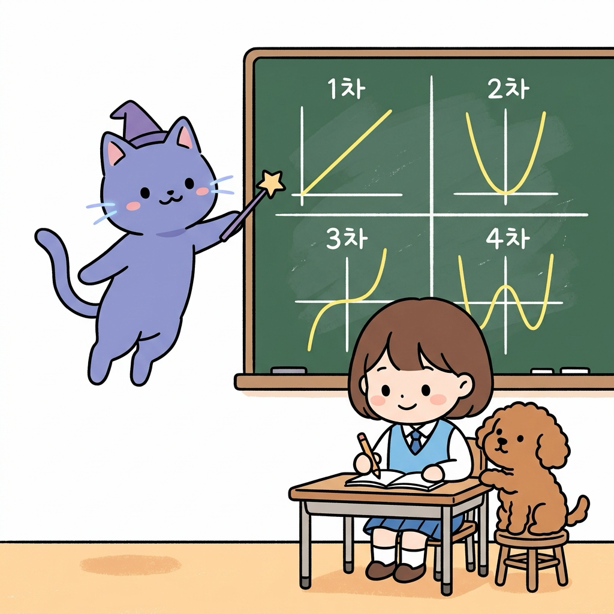
그림 02-4-15 차수(1차, 2차, 3차, 4차)에 따른 방정식의 분류와 그에 상응하는 다양한 형태의 기하학적 그래프 곡선을 칠판으로 살펴보는 지니와 도로시, 토토2.4.4.2 오차방정식의 장벽과 아벨-루피니 정리
“우와, 그럼 오차방정식, 육차방정식도 계속 공식이 있겠네?” 도로시의 눈이 반짝였습니다.
그림 02-4-16 5차, 6차 방정식의 근의 공식도 있을 것이라며 눈을 반짝이고 상상하는 도로시와 토토
“놀랍게도 그렇지 않단다, 도로시. 차수가 오차(5차) 이상인 방정식부터는 사칙연산과 거듭제곱근만으로 표현되는 일반적인 근의 공식이 존재하지 않는다는 사실이 증명되었어.” 지니가 단호하게 고개를 저었습니다.
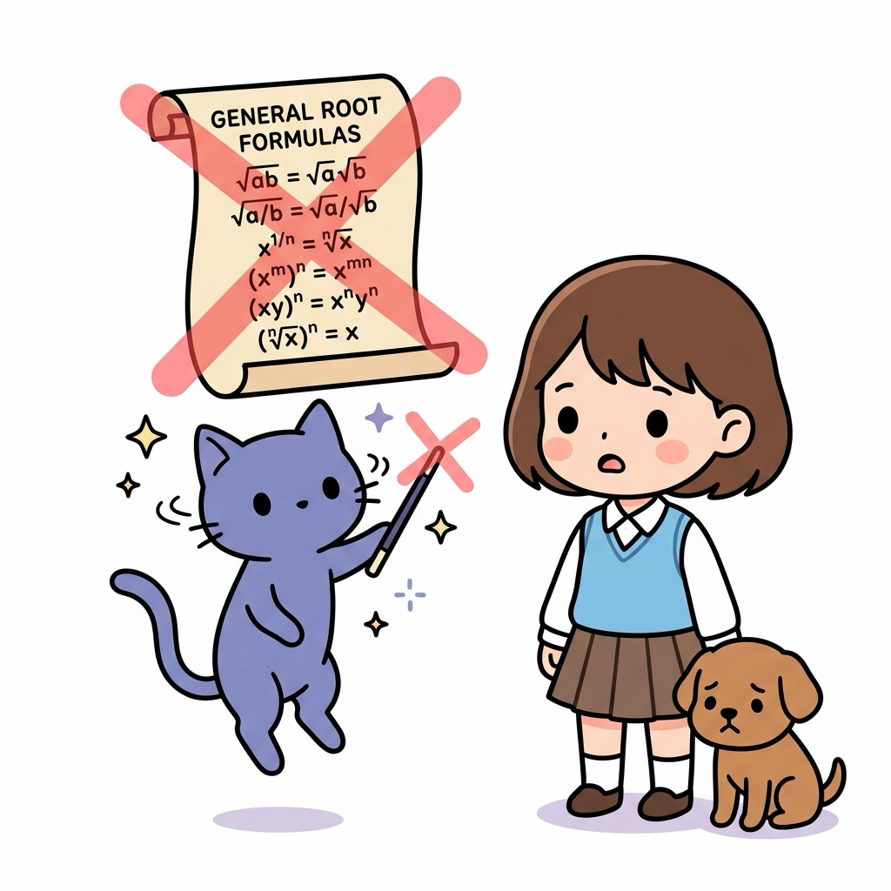
그림 02-4-17 5차 이상의 고차방정식에는 사칙연산과 거듭제곱근만으로 표현되는 일반적인 공식이 없음을 설명하는 지니와 실망한 도로시, 토토- 아벨-루피니 정리 (Abel-Ruffini Theorem): 19세기 초, 천재 수학자 닐스 헨리크 아벨과 파올로 루피니는 “5차 이상의 일반적인 다항방정식은 대수적으로(사칙연산과 제곱근 기호만으로) 풀 수 없다”는 것을 증명했습니다.
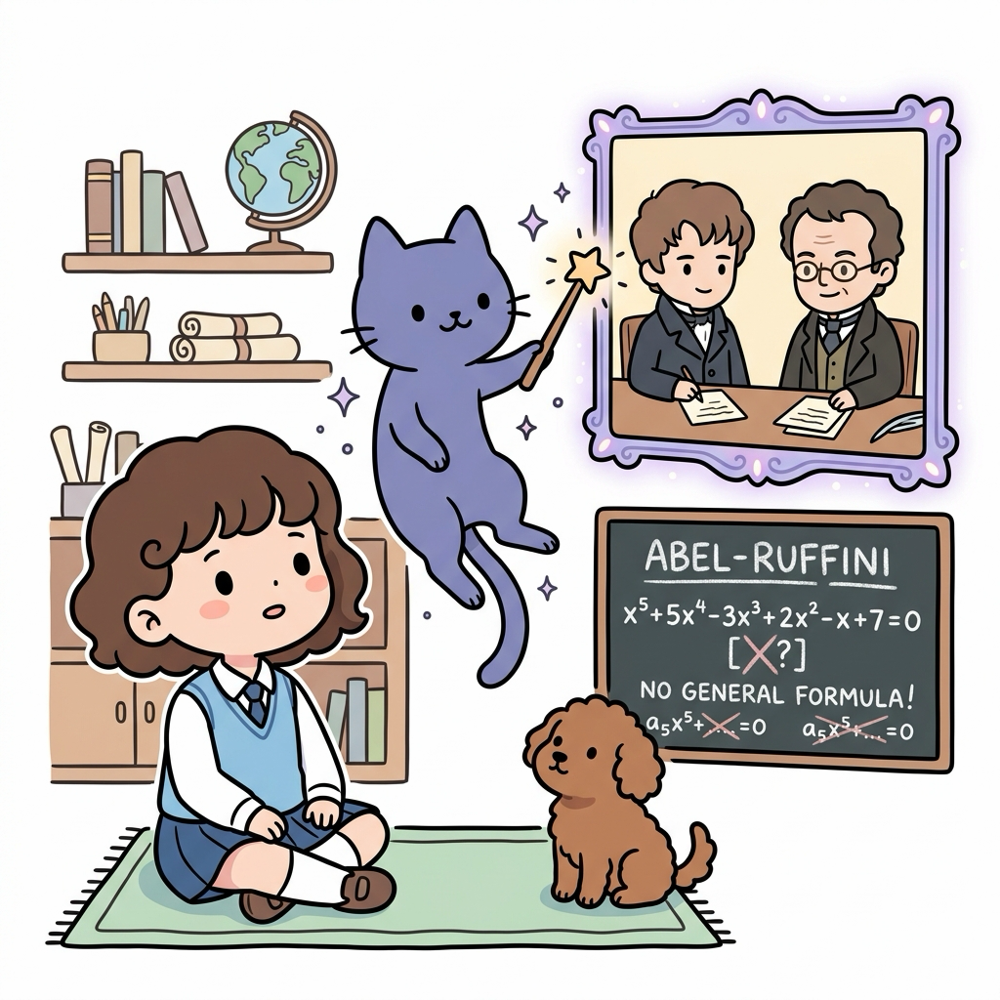
그림 02-4-18 5차 이상의 방정식의 근의 공식이 없다는 장벽을 수학적으로 증명한 아벨과 루피니의 업적을 설명하는 지니와 도로시, 토토- 갈루아 이론 (Galois Theory): 이후 에바리스트 갈루아는 방정식의 근들의 대칭성을 군(Group)이라는 대수적 구조로 연결하는 ‘갈루아 이론’을 통해, 어떤 방정식이 대수적으로 풀릴 수 있는지 없는지를 판별하는 근본적인 원리를 제시했습니다.
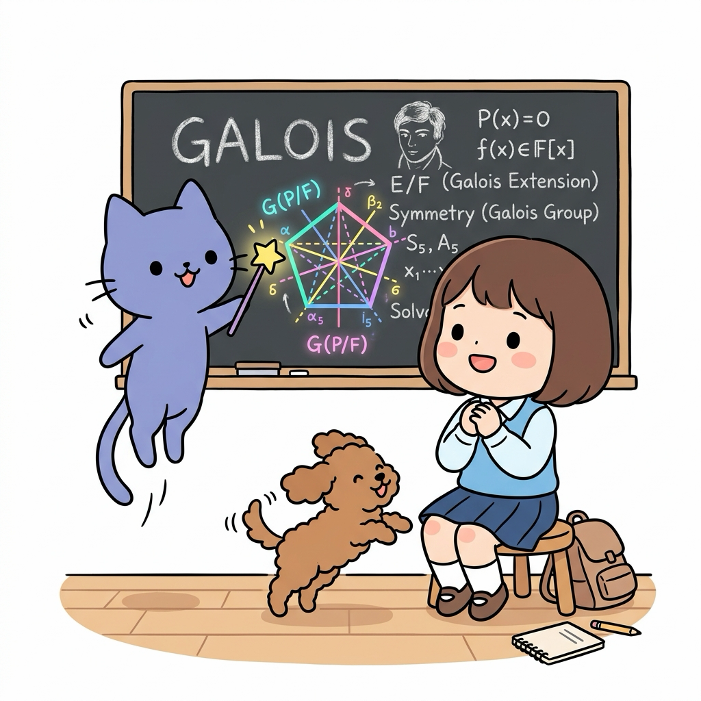
그림 02-4-19 대칭군(Symmetry Group) 구조를 통해 방정식의 해법 가능성을 규명한 갈루아 이론을 감상하는 지니와 도로시, 토토“대수적 공식이 없다는 것뿐이지 해가 존재하지 않는 것은 아니란다. 단지 우리가 사칙연산과 루트 기호만으로 그 아름다운 해를 한 줄의 공식으로 적어낼 수 없을 뿐이지.” 지니의 친절한 설명에 도로시는 수학의 깊은 신비로움에 압도된 듯 깊은 한숨을 쉬었습니다.
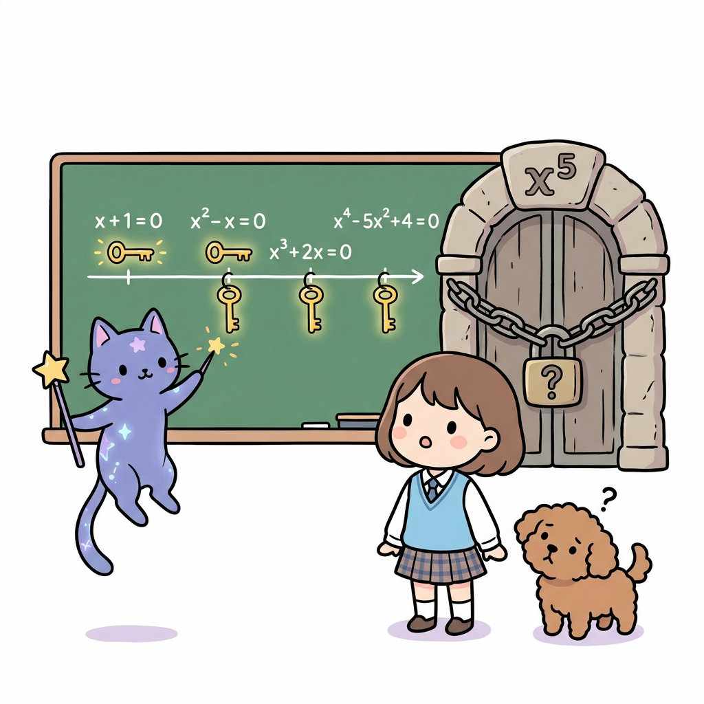
그림 02-4-20 1차부터 4차 방정식까지는 해결할 수 있는 열쇠(근의 공식)가 존재하지만, 5차 이상의 방정식은 대수적 공식의 열쇠가 존재하지 않는 장벽에 가로막혀 있음을 보여주는 역사 탐험 지도와 도로시, 토토02.4.5 벨만 기대 방정식의 연립방정식적 실체
“도로시, 방금 배운 연립방정식들이 강화학습의 벨만 기대 방정식(Bellman Expectation Equation)을 푸는 핵심 열쇠가 된단다. 실제로 격자 세상의 상태 가치들이 어떻게 연립방정식으로 표현되는지 직접 볼래?”
지니가 손가락을 튕기자 두 개의 방 A와 B로 이루어진 격자 지도가 나타났습니다.
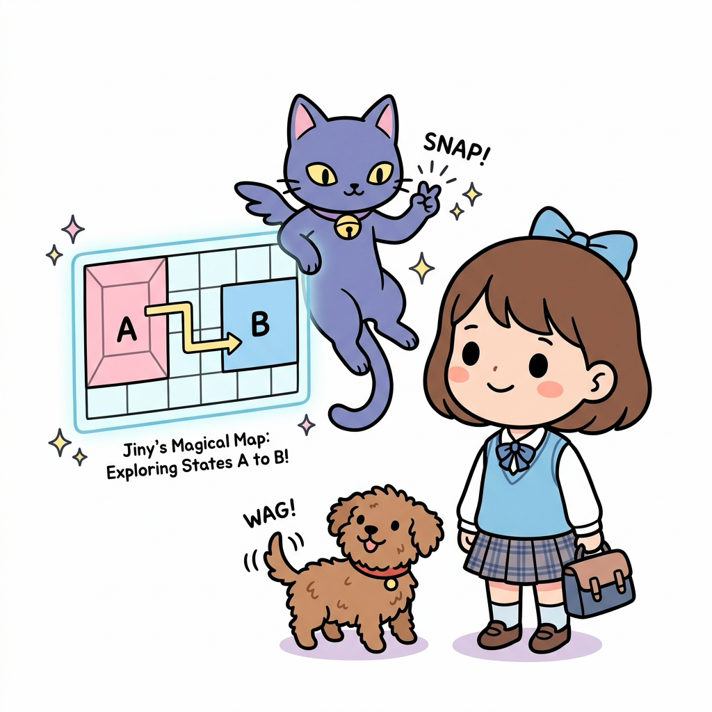
그림 02-4-21 지니가 손가락을 튕기자 마법처럼 둥둥 떠오른 두 개의 방 A와 B로 이루어진 격자 세상 상태 지도와 도로시, 토토2.4.5.1 상태 가치 사이의 관계
격자 세상에 오직 두 개의 상태 A와 B만 존재한다고 가정해 봅시다. 할인율 γ = 0.9 이며, 보상 및 상태 이동 규칙이 다음과 같습니다:
- 상태 A에서 다음 상태는 항상 B이고, 이때 받는 즉각 보상은 2입니다. v(A) = 2 + 0.9 × v(B) … ①
- 상태 B에서 다음 상태는 항상 A이고, 이때 받는 즉각 보상은 -1입니다. v(B) = -1 + 0.9 × v(A) … ②
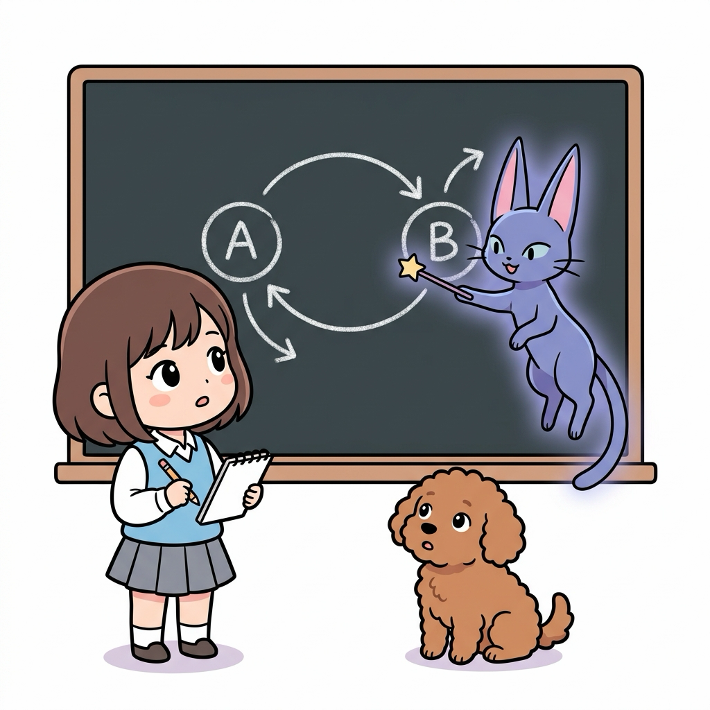
그림 02-4-22 상태 A와 B가 서로 물고 물리며 가치값을 전달하는 순환 구조와 벨만 기대 방정식의 관계를 칠판으로 살펴보는 도로시와 토토“정말이네! 미지수가 v(A), v(B) 2개이고 식이 2개인 완벽한 연립방정식이야!”
도로시가 큰 소리로 외쳤습니다.
2.4.5.2 대입법으로 가치 구하기
지니가 대입법을 사용해 가치 함수의 참값을 구하기 시작했습니다.
- 식 ②의 v(B) 식을 식 ①에 대입합니다: v(A) = 2 + 0.9 × [ -1 + 0.9 × v(A) ]
- 괄호를 풀어서 전개합니다: v(A) = 2 - 0.9 + 0.81 × v(A) v(A) = 1.1 + 0.81 × v(A)
- v(A) 항을 좌변으로 이항합니다: v(A) - 0.81 × v(A) = 1.1 (1 - 0.81) × v(A) = 1.1 0.19 × v(A) = 1.1
- v(A)의 값을 계산합니다: v(A) = 1.1 ÷ 0.19 = 약 5.79
- 구한 v(A)의 값을 식 ②에 대입하여 v(B)를 계산합니다: v(B) = -1 + 0.9 × 5.79 = -1 + 5.21 = 4.21
“와! 쳇바퀴 돌 듯 순환하던 두 상태의 정확한 가치 참값인 v(A) ≈ 5.79, v(B) ≈ 4.21을 찾아냈어!”
도로시와 토토가 박수를 치며 지니의 마법에 찬사를 보냈습니다.
그림 02-4-23 대입법이라는 수학적 열쇠를 사용하여 꼬여 있던 연립방정식 자물쇠를 풀고 상태 A와 B의 가치를 완벽히 계산하는 데 성공한 지니와 도로시, 토토
02.4.6 실전 예제
학습한 내용을 바탕으로 다음 문제를 직접 해결해 봅시다.
문제 1 (가치 연립방정식 풀이)
다음 연립방정식을 만족하는 v(s1)과 v(s2)의 해를 구하시오. (단, 소수 첫째자리까지 반올림하여 구할 것) ① v(s1) = 1 + 0.5 × v(s2) ② v(s2) = 4 + 0.5 × v(s1)
풀이: 식 ②를 식 ①에 대입합니다: v(s1) = 1 + 0.5 × [ 4 + 0.5 × v(s1) ] v(s1) = 1 + 2 + 0.25 × v(s1) v(s1) = 3 + 0.25 × v(s1)
v(s1) 항을 좌변으로 이항합니다: v(s1) - 0.25 × v(s1) = 3 0.75 × v(s1) = 3 v(s1) = 3 ÷ 0.75 = 4
구해진 v(s1) = 4 를 식 ②에 대입하여 v(s2)를 구합니다: v(s2) = 4 + 0.5 × 4 = 4 + 2 = 6
정답: v(s1) = 4, v(s2) = 6
02.4.7 핵심 요약
그림 02-4-24 일차방정식의 저울 균형, 연립방정식의 대수적 해법, 그리고 고차방정식의 해의 역사까지 학습을 무사히 마치고 뿌듯해하는 지니와 도로시, 토토의 기념사진
- 일차방정식은 양팔 저울의 원리와 같이 등식의 성질 및 이항(부호를 바꿔 반대편으로 옮김)을 활용하여 미지수의 참값을 구하는 해결 도구이다.
- 강화학습의 상태 가치들이 순환하며 서로에게 영향을 미칠 때는 각 상태들의 가치 관계를 연립방정식 형태로 나타낼 수 있다.
- 가감법과 대입법은 맞물린 벨만 기대 방정식의 상태 가치 참값을 대수적으로 오차 없이 풀어내는 마법의 열쇠이다.
- 방정식의 종류와 해의 역사에서 1차부터 4차 다항방정식은 일반적인 대수적 해법(근의 공식)이 존재하지만, 5차 이상의 방정식은 대수적으로 풀 수 없음이 아벨과 갈루아에 의해 밝혀졌다.